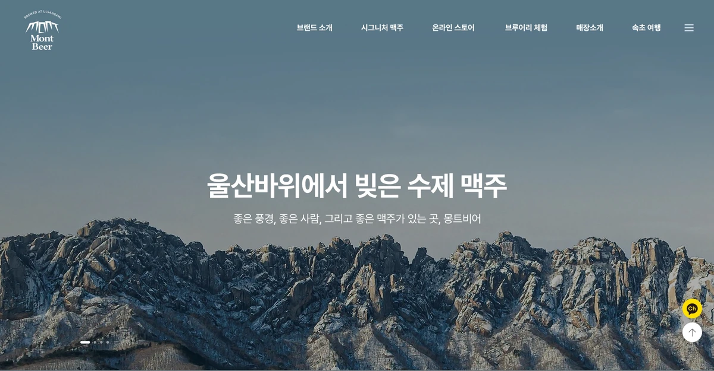
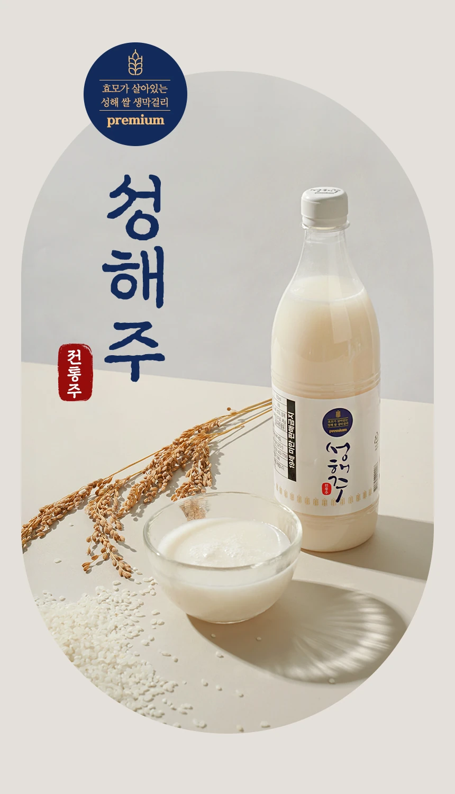
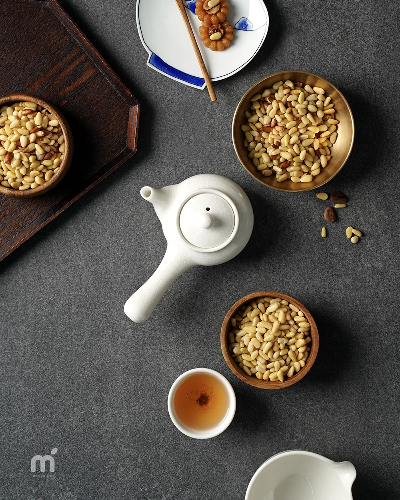

SCENARIOS
이런 고민에는
이렇게 접근합니다
고객의 고민 → 처리 과정 → 보게 될 화면 순서로 정리한 도입 시나리오입니다. 특정 고객의 성과 사례가 아니며, 화면마다 실제 작업물·실제 화면·공식 가이드 이미지를 구분해 표시했습니다.
-
01
"상품이 잘 안 팔려요"
상세페이지와 추천을 함께 개선
상품의 강점(USP)이 한눈에 보이도록 상세페이지를 다시 설계하고, 고객 관심사에 맞는 상품을 추천해 구매 결정을 돕습니다.
- 진단으로 강점·부족한 점 정리
- 상세페이지 재구성·제작
- 추천 영역 적용 검토
실제 작업물 · 망고트리 제작 상세페이지스마트카드태그 상세페이지 일부 · 원본 작업 페이지 (새 창) ↗ -
02
"콘텐츠 만들 시간이 없어요"
이미지·영상 소재 제작을 지원
상품 정보를 바탕으로 상세컷·SNS·영상 소재 제작을 AI 도구와 디자이너가 함께 진행합니다.
- 기획 방향 정리
- AI 도구로 초안·소재 생성
- 디자이너 검수·보정
실제 화면 · 2026-10-30 캡처페이지메이커 AI 이미지 제작 화면 · 페이지메이커 (새 창) ↗ -
03
"고객 문의가 너무 많아요"
반복 문의에 AI 상담 적용
자주 묻는 질문을 자연어로 답하는 AI 상담을 붙여 반복 문의 응대를 돕고, 상담원은 중요한 문의에 집중하게 합니다.
- 자주 묻는 질문·답변 정리
- 대화형 응대 화면 구성
- 상담원 연결 기준 설정
실제 화면 · 대화형 화면 예시망고트리 AI 기획 도우미(기획용)의 대화 화면입니다. 쇼핑몰 상담용 화면은 상담에서 범위를 정해 구성합니다 · 망고트리 AI 기획 (새 창) ↗ -
04
"데이터가 뭘 말하는지 몰라요"
데이터를 모아 다음 할 일 제안
매출·고객·광고 데이터를 한곳에 모아 분석하고, 지금 살펴볼 항목과 다음 할 일을 정리해 드립니다.
- 흩어진 데이터 모으기
- 클릭·구매 추이 확인
- 살펴볼 항목·다음 할 일 정리
공식 가이드 이미지 일부 확대 · 값은 예시페이지커넥트 실적 리포트 (baechesa.kr 이용 가이드) · 가이드 원본 이미지 (새 창) ↗


PROCESS
AI가 속도를 내고,
사람이 끝까지 만듭니다
- STEP 1
진단
기업명으로 시작하는 무료 진단으로 지금 상태와 먼저 손볼 곳을 정리합니다.
- STEP 2
설계·구현
기획·디자인·촬영·개발을 한 팀이 맡아, 필요한 곳에 AI를 붙여 만듭니다.
- STEP 3
운영 개선
오픈 뒤에도 데이터를 보며 콘텐츠와 기능을 계속 다듬습니다.
WORKS
실제 제작 작업물
망고트리가 직접 제작한 홈페이지·상세페이지·촬영 작업물 일부입니다. AI 자동 생성 결과를 보여주는 예시가 아닙니다. 이미지를 누르면 망고트리 원본 작업 페이지가 새 창으로 열립니다.

몽트비어 홈페이지 작업물 — 망고트리 원본 작업 페이지 (새 창)실제 작업물 · 홈페이지몽트비어출처: mangotree.co.kr 
성해주 전통주 상세페이지 작업물 — 망고트리 원본 작업 페이지 (새 창)실제 작업물 · 상세페이지성해주 전통주출처: mangotree.co.kr 추어탕 촬영 작업물 — 망고트리 원본 작업 페이지 (새 창) 실제 작업물 · 촬영추어탕출처: mangotree.co.kr 
가평 잣 촬영 작업물 — 망고트리 원본 작업 페이지 (새 창)실제 작업물 · 촬영가평 잣출처: mangotree.co.kr
우리 회사의 고민부터
진단으로 시작하세요.
무료 AI 진단으로 우리 비즈니스에 맞는 도입 방향을 확인하세요.